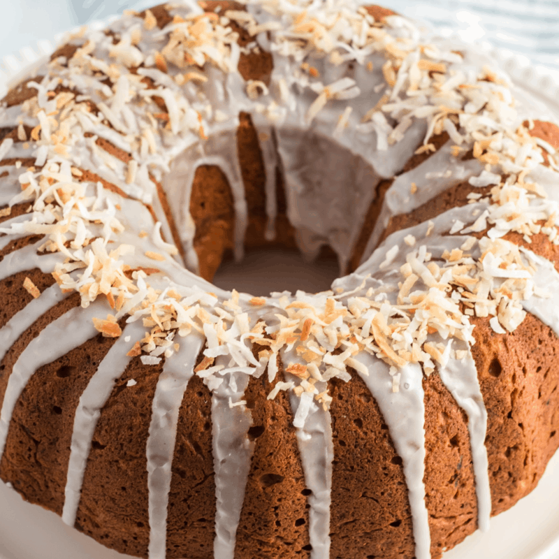
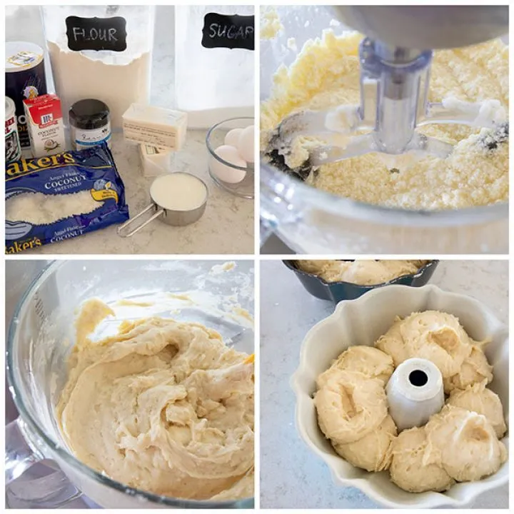
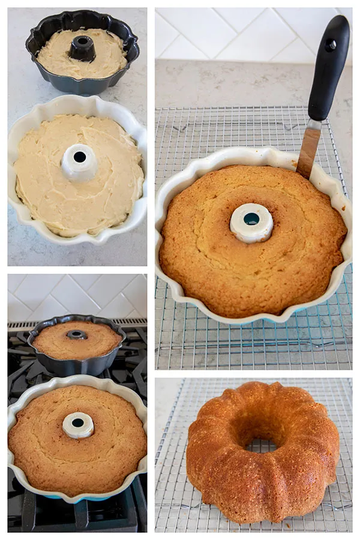
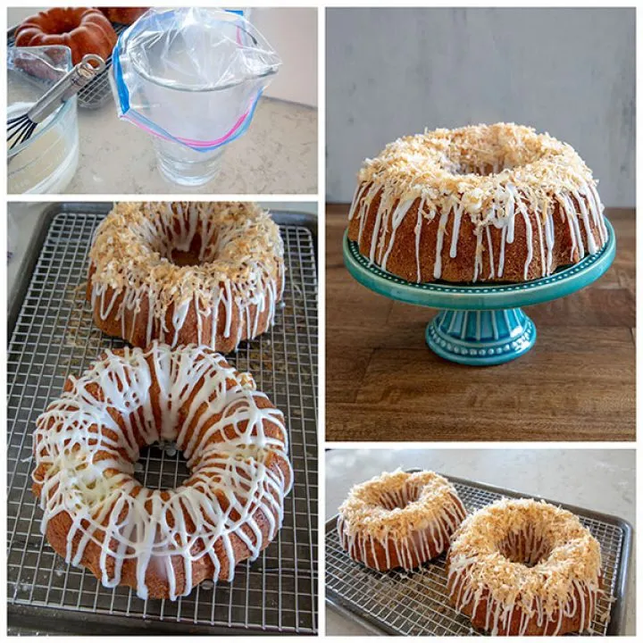

Coconut Bundi Cake with Chocolate-Coconut Glaze
This from-scratch cake is a pound cake and a bundt cake. If you prefer, you can make it in two 6 cup loaf pans, but I love using my 6 cup bundt pans.
A 6 cup bundt pan is a half size bundt pan and this recipe will make two little bundt cakes. If you prefer, you could make it in a full size 12 cup bundt pan, but you’ll need to increase the cook time to 60-65 minutes. Cover of The Weeknight Dessert Cookbook by Mary Younkin The recipe is from a delicious new cookbook, The Weeknight Dessert Cookbook, written by Mary, Barefeet In The Kitchen. I like her description of the cookbook:
Mary notes that she’s not an advocate for buying a slew of specialty ingredients, but the coconut extract is key to the lovely flavor in this cake. Coconut extract is usually easy to find at the grocery store in the spice aisle.
BAKING A COCONUT BUNDT CAKE
The original recipe in the cookbook made one pound cake. I doubled the recipe so I could have two little bundt cakes. One to eat now and one to tuck away in the freezer for another day, or giveaway to a friend or neighbor.
I also changed up the directions just a little bit to suit the way I like to bake. The batter is thick and creamy. I like to use a scoop to portion out an even amount of batter into two pans. Be sure to grease and flour our pans well, or use non-stick cooking spray with flour.
Bake the cake until it’s golden brown, starting to pull away from the sides of the pan, and a toothpick inserted should come out with just a few moist crumbs. You can also use an instant-read thermomter to see if the center is about 210°F
REMOVING THE BUNDT CAKE FROM THE PAN
I like to use a small icing spatula to loosen the cake from the edges and center of the bundt pan, but you can also use a small sharp knife. collage showing Icing and decorating Coconut Bundt Cake
If your cake does stick a little bit to the bundt pan, don’t fret. Turn the bundt pan upside down on the cooling tray for a few minutes and sometimes the steam from the cake will help loosen it from the pan.
Also, the icing and toasted coconut can cover any little problems. If you look closely at the picture on the left above, you can see the cake stuck in a couple of places because I was in a hurry to get the cake out of the pan. But once the coconut is on top, no one will ever notice it. You can fill a piping bag with icing to make a pretty design on the cake, but I’ll often use a gallon size Ziploc bag instead. I put the bag inside a small pitcher, so the bag is easy to fill with icing.
08/Jan